Miguel Ángel consideraba la escultura su vocación principal. Desde joven estudió esculturas antiguas y desarrolló un interés constante por representar el cuerpo humano. Sus figuras suelen transmitir fuerza y tensión.
Línea del tiempo de las esculturas
Explorá algunas de las esculturas más conocidas de Miguel Ángel. Podés desplazarte por la línea, hacerle zoom para poder visualizar las obras mejor y también ampliarlas.

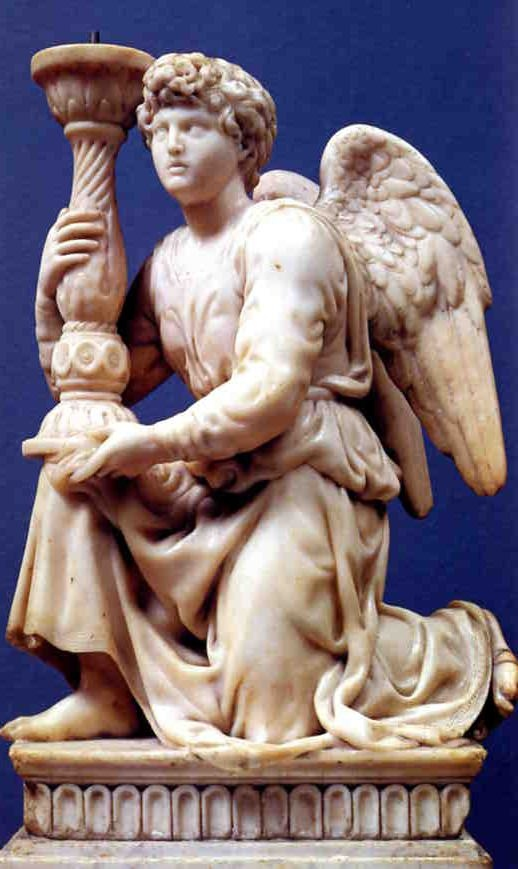
Ángel arrodillado
1494–1495 · Mármol
Escultura para la tumba de Santo Domingo en Bolonia; sostiene un candelabro sobre la rodilla.

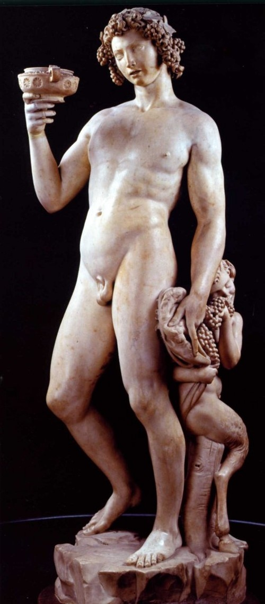
Baco
1496–1497 · Mármol
Representa al dios del vino con una postura inestable y un sátiro a sus pies.

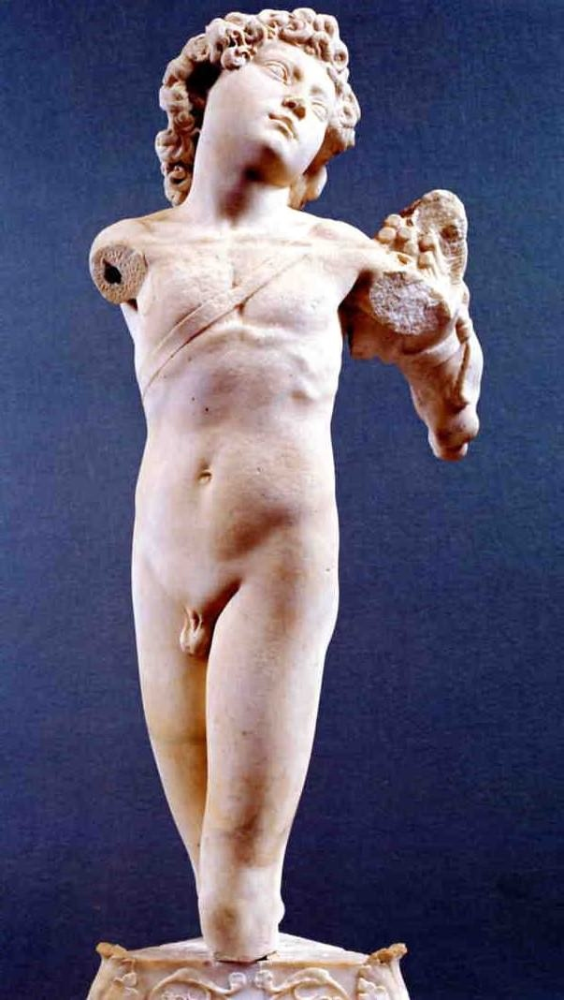
Cupido
c. 1494–1496 · Mármol
Una de las primeras esculturas atribuidas al artista; la obra sufrió daños y perdió partes.

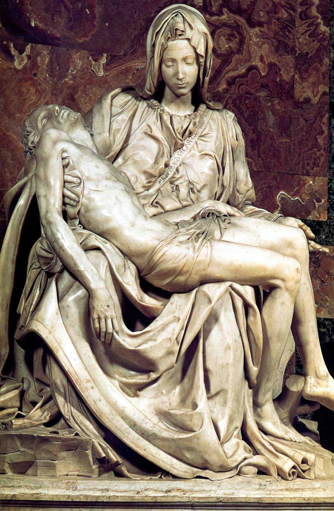
Piedad del Vaticano
1499–1500 · Mármol
La Virgen sostiene el cuerpo de Cristo; Miguel Ángel la talló en un solo bloque de mármol.

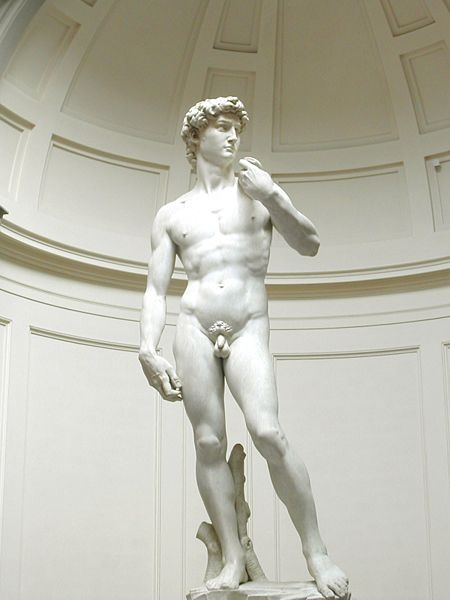
David
1501–1504 · Mármol
Representa al héroe bíblico antes del enfrentamiento con Goliat.

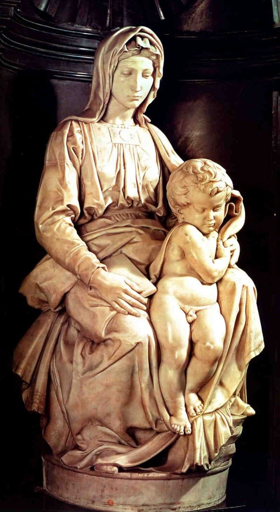
Madonna de Brujas
1501–1504 · Mármol
La Virgen y el Niño fueron encargados por comerciantes flamencos para una capilla familiar.

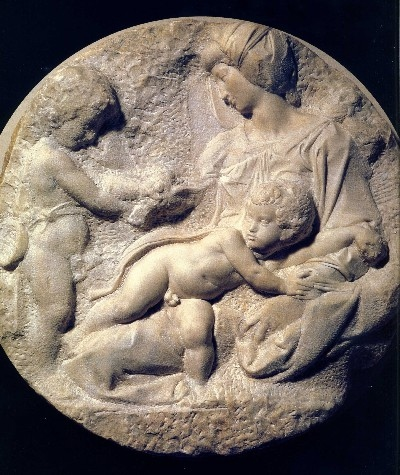
Tondo Taddei
1503–1506 · Relieve en mármol
Relieve circular con la Virgen, el Niño y san Juan Bautista.

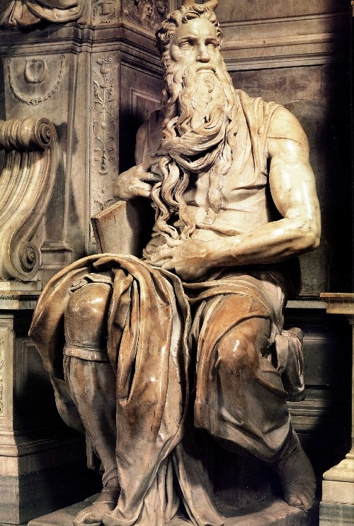
Moisés
1513–1515 · Mármol
Figura central concebida para el monumento funerario del papa Julio II.

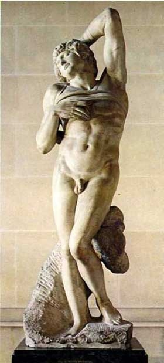
Esclavos
1513–1520 · Mármol
Figuras inicialmente destinadas a la tumba de Julio II; quedaron sin terminar.

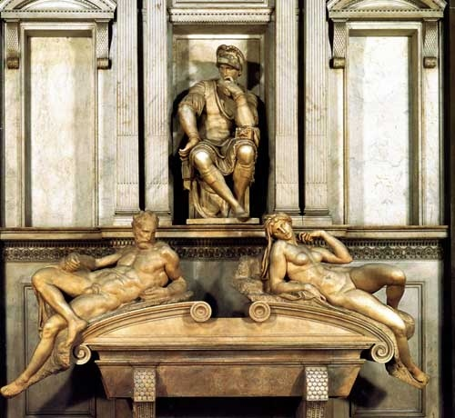
Capilla Medici
1520–1534 · Mármol
Conjunto arquitectónico y escultórico de la Sacristía Nueva de San Lorenzo.

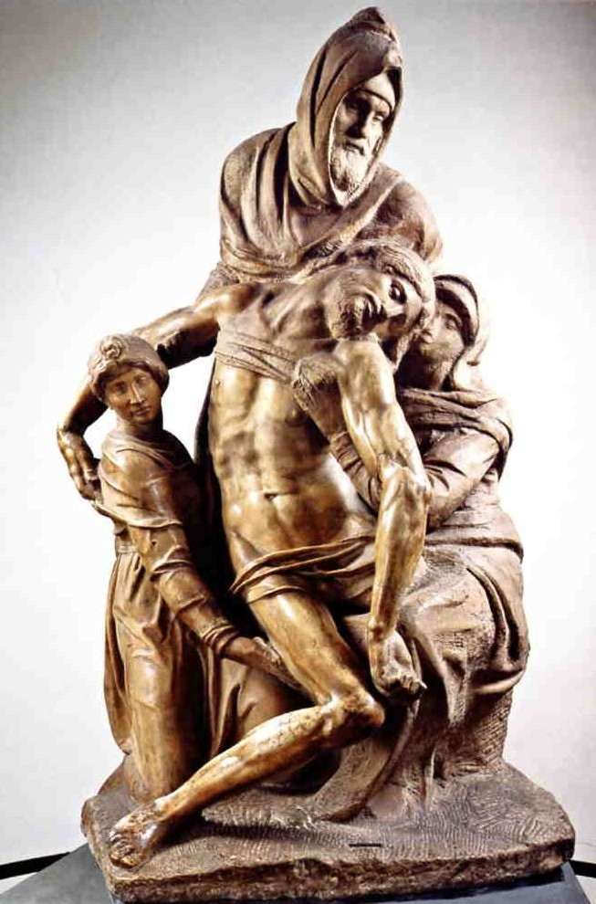
Piedad florentina
Hacia 1550 · Mármol · Inacabada
Composición de varias figuras que Miguel Ángel habría pensado como su propio monumento funerario.